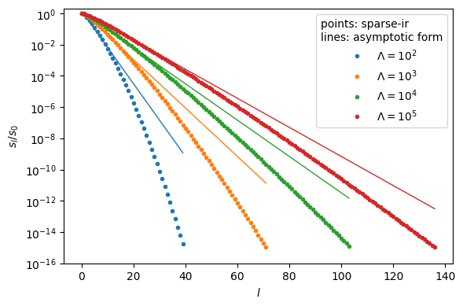

IR, DLR and MiniPole: history and comparison#
This page explains how the intermediate representation (IR), the discrete Lehmann representation (DLR) and the minimal pole representation (MiniPole) are related, where each came from, and what each is convenient for.
The singular-value figure and the size table are computed when this page is built, using the released sparse-ir Python package.
The common idea#
For fermions, the imaginary-time Green’s function is related to the spectral function by
and there is a similar relation for bosons (see Green’s functions). The singular values of \(K\) decay at least exponentially, so \(K\) is numerically low rank. Consequently \(G(\tau)\) holds far fewer independent degrees of freedom than \(\rho(\omega)\): most components of \(\rho\) barely affect \(G\).
IR and DLR build data-independent spaces directly from the kernel. MiniPole is different: it fits one particular Matsubara function and does not factorize \(K\). For MiniPole the low rank of the kernel is motivation (few poles suffice), not the construction itself.
how it is obtained |
depends on the data? |
output |
|
|---|---|---|---|
IR (2017) |
singular value expansion of \(K\) |
no |
orthonormal functions \(U_l(\tau)\), \(\hat U_l(i\nu)\), \(V_l(\omega)\) |
DLR (2021/22) |
interpolative decomposition of \(K\) |
no |
real poles \(\omega_k\) and interpolation nodes |
MiniPole (2023/24) |
Prony/ESPRIT fit of a given \(G\) |
yes |
a few complex poles |
History#
2017: the intermediate representation#
Shinaoka et al. [2017] defined the IR as the singular value expansion \(K(x, y) = \sum_l s_l u_l(x) v_l(y)\) of the kernel and showed that the singular values \(s_l\) decay at least exponentially. The singular value decomposition of \(K\) had long been used in analytic continuation. What was new was to use the left singular functions as a compact basis for the imaginary-time dependence of Green’s functions, built from the kernel itself rather than chosen generically. Legendre polynomials [Boehnke et al., 2011-08] are recovered in the limit \(\Lambda = \beta\omega_\mathrm{max} \to 0\), and IR coefficients decay faster than Legendre coefficients. In the same year Otsuki et al. [2017] combined the SVD with \(L_1\) regularization for analytic continuation, the origin of the SpM method.
2018–2020: IR matures#
Chikano et al. [2018] found empirically that the basis size grows as \(O(\log \beta)\) for fermions.
Chikano et al. [2019] released the
irbasislibrary.Li et al. [2020] introduced sparse sampling: imaginary-time and Matsubara sampling points derived from the roots of the highest-order basis function.
Otsuki et al. [2020] reviewed sparse modeling in quantum many-body problems.
2020: sparse poles from the IR#
Shinaoka and Nagai [2021] (arXiv July 2020) fitted matrix-valued hybridization functions with a small number of bath levels. The pole candidates lie on the real axis, on a grid refined between the roots of the highest real-frequency IR function \(V_{L-1}(\omega)\), and the cost function is written in IR-coefficient space with a group-LASSO term. This is a DLR-like pole set derived from the IR.
2021/22: the discrete Lehmann representation#
Kaye et al. [2022] took the same low-rank observation, which they explicitly relate to the IR, and replaced the SVD with an interpolative decomposition (ID).
Poles \(\omega_k\) are selected from the columns of a discretized kernel, and imaginary-time and Matsubara nodes from the rows restricted to those poles.
The result is an explicit, non-orthogonal expansion
\(G(i\nu) \approx \sum_k c_k / (i\nu - \omega_k)\) with real poles.
The DLR rank is \(O(\log\Lambda \log 1/\varepsilon)\), inferred numerically in that paper.
The library libdlr followed [Kaye et al., 2022].
sparse-ir provides a DLR constructed from the IR basis instead of by ID; see Discrete Lehmann representation and Wallerberger et al. [2023].
2023–2025: minimal pole representation#
Zhang and Gull [2024] introduced the minimal pole representation: the Matsubara data are continued by a Prony approximation and conformally mapped to the unit circle, and a second Prony step on contour moments gives a small number of complex poles. Zhang et al. [2024] extended this to matrix-valued functions, replaced Prony by ESPRIT, and added a fast variant that takes a DLR as input. Zhang et al. [2025] applied the idea to real-frequency spectral functions.
Beyond one-particle functions#
For two-particle (three- and four-point) functions there is no single SVD, and each approach builds the representation from products of one-particle kernels.
Overcomplete IR [Shinaoka et al., 2018]: a sum of products of one-particle IR bases, one term per pole structure.
Sparse sampling and tensor networks [Shinaoka et al., 2020]: sparse Matsubara sampling for two-particle Green’s functions and a tensor-network compression of the IR coefficients.
Bethe–Salpeter equation in the IR [Wallerberger et al., 2021], with exponential convergence in the basis size.
Relation to partial spectral functions [Dirnböck et al., 2024].
DLR for three-point functions [Kiese et al., 2025]: products of simple poles on universal nodes.
A related approach that does not factorize a kernel: quantics tensor trains compress correlation functions through their multiscale structure [Shinaoka et al., 2023].
Why the size grows as \(\log\Lambda\)#
Until recently the \(O(\log\Lambda)\) size of the IR was an empirical observation. Misawa [2026] gave an analytic explanation. At large \(\Lambda\) a logarithmic change of variables maps the problem onto a convolution on an interval of length about \(\log\Lambda\), which gives the asymptotic form
that is, exponential decay at the rate \(\pi^2/(4\log\Lambda)\). Hence the number of singular values above a relative cutoff \(\varepsilon\) is
The figure compares this asymptotic form with singular values computed by sparse-ir.
It describes the decay well for small \(l\); deep in the tail the computed values fall faster than the asymptotic form, which then overestimates them.
import numpy as np
import matplotlib.pyplot as plt
import sparse_ir
lambdas = [1e2, 1e3, 1e4, 1e5]
fig, ax = plt.subplots(figsize=(6, 4))
for i, lam in enumerate(lambdas):
basis = sparse_ir.FiniteTempBasis('F', beta=lam, wmax=1.0, eps=1e-15)
s = basis.s / basis.s[0]
l = np.arange(s.size)
ax.semilogy(l, s, 'o', ms=3, color=f'C{i}', label=rf'$\Lambda=10^{int(np.log10(lam))}$')
lc = np.linspace(0, s.size - 1, 400)
ax.semilogy(lc, np.cosh(np.pi**2 * lc / (2 * np.log(lam)))**-0.5, '-', color=f'C{i}', lw=1)
ax.set_xlabel(r'$l$')
ax.set_ylabel(r'$s_l/s_0$')
ax.set_ylim(1e-16, 2)
ax.legend(title='points: sparse-ir\nlines: asymptotic form')
fig.tight_layout()
plt.show()

Two related lines of work look at the same kernel from other directions.
Ohzeki [2026] factors the kernel into a pure Laplace factor and a statistics-dependent weight, and obtains a generalized singular value decomposition in a weighted metric, with prolate spheroidal wave functions and sampling nodes from a colleague matrix. It is a complementary Slepian-based generalized singular-value and sampling construction; its channel capacity \(\Lambda/\pi\) refers to that weighted channel, not to the ordinary IR rank. The logarithmic growth of the standard IR rank is the subject of Misawa [2026].
In lattice QCD the Laplace kernel \(e^{-\omega t}\) on a half-line is diagonalized by the Mellin transform, with continuous singular values \(\sqrt{\pi/\cosh(\pi s)}\) and modes that are oscillatory in \(\log\omega\) [Bruno et al., 2025, Hashimoto, 2026, Tsuji and Hashimoto, 2026]. The resemblance to the IR asymptotics above is an analogy between different kernels and measures, not a quantitative identification.
Sizes#
The table gives the IR basis size (fermions, \(\omega_\mathrm{max} = 1\), \(\beta = \Lambda\)) at several relative cutoffs \(\varepsilon\), computed with sparse-ir.
epss = [1e-6, 1e-10, 1e-14]
print('Lambda ' + ''.join(f'eps={e:.0e}'.rjust(12) for e in epss))
for lam in lambdas:
sizes = [sparse_ir.FiniteTempBasis('F', beta=lam, wmax=1.0, eps=e).size for e in epss]
print(f'{lam:6.0e} ' + ''.join(f'{n:12d}' for n in sizes))
Lambda eps=1e-06 eps=1e-10 eps=1e-14
1e+02 21 30 38
1e+03 34 52 68
1e+04 48 74 98
1e+05 61 95 129
The size grows linearly in \(\log\Lambda\) at fixed \(\varepsilon\) and roughly linearly in \(\log 1/\varepsilon\) at fixed \(\Lambda\).
The DLR has the same \(O(\log\Lambda\log 1/\varepsilon)\) scaling with a comparable size. For example, Kaye et al. [2022] (Fig. 8) report 91 IR functions and 96 DLR poles at \(\Lambda = 10^4\), \(\varepsilon = 10^{-14}\); this is one parameter point, not a universal ordering. The SVD is optimal for its own norm and truncation criterion, whereas the DLR trades some compactness for an explicit pole form. MiniPole is not a basis and cannot be compared in the same way: its number of poles depends on the function being fitted and on the tolerance, and it is typically much smaller for smooth spectra.
Properties and when to use which#
IR |
DLR |
MiniPole |
|
|---|---|---|---|
construction |
SVD of \(K\) |
ID of \(K\) |
ESPRIT fit of the given \(G\) |
data-dependent |
no |
no |
yes |
size |
optimal for the SVD truncation criterion |
same scaling, comparable size |
small for smooth spectra; depends on the data and tolerance |
form |
numerical functions (piecewise polynomials) |
\(\sum_k c_k/(i\nu-\omega_k)\), real \(\omega_k\) |
\(\sum_j A_j/(z-\xi_j)\), complex \(\xi_j\) |
orthogonal |
yes |
no |
no |
sampling |
sparse sampling points |
ID-selected nodes |
not a sampling scheme |
\(G(\tau)\) |
\(U_l(\tau)\) directly |
explicit exponentials |
needs an extra step (see below) |
convenient for |
compression, sparse sampling, linear algebra in coefficient space |
convolutions, Dyson equation, analytic operations with poles |
analytic continuation, compact pole models |
The error bounds of the DLR [Kaye et al., 2022] concern the approximated function; the DLR coefficients themselves can be ill-conditioned or non-unique.
Note
MiniPole and \(G(\tau)\). The MiniPole pole sum represents the function in the upper half plane. On the negative Matsubara axis the function is given by the mirrored poles, since \(G(-i\nu) = G(i\nu)^\dagger\) (complex conjugate for scalar data). A pole sum with complex poles therefore cannot be inserted unchanged into the imaginary-time kernel for all Matsubara frequencies. Obtaining \(G(\tau)\) requires a two-branch reconstruction or a return through the IR or DLR: an extra step, not an impossibility.